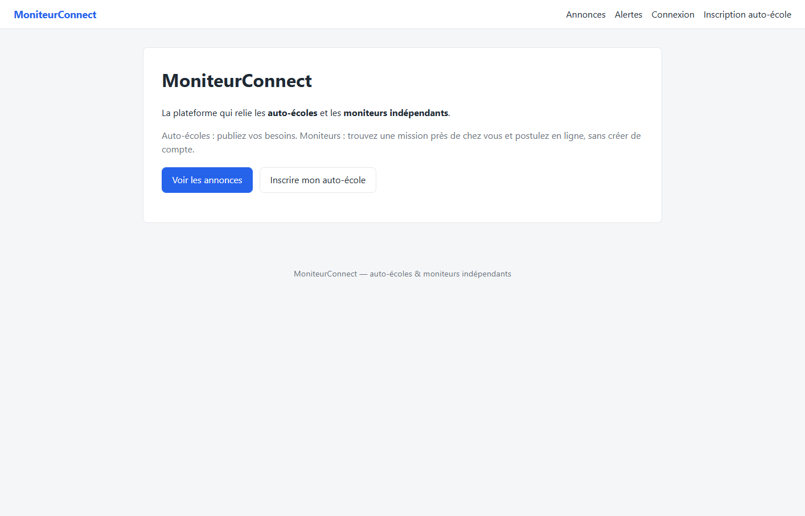
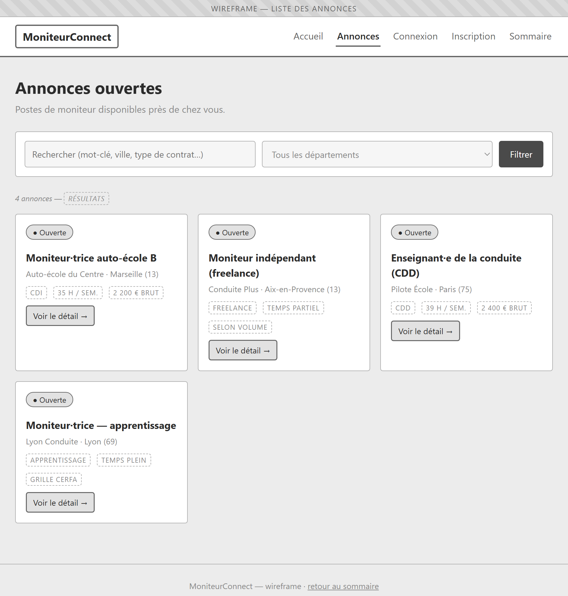
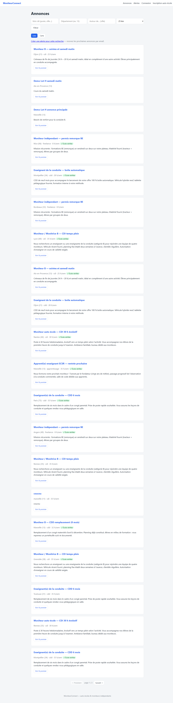
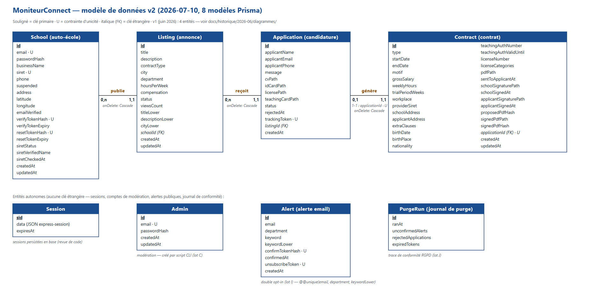
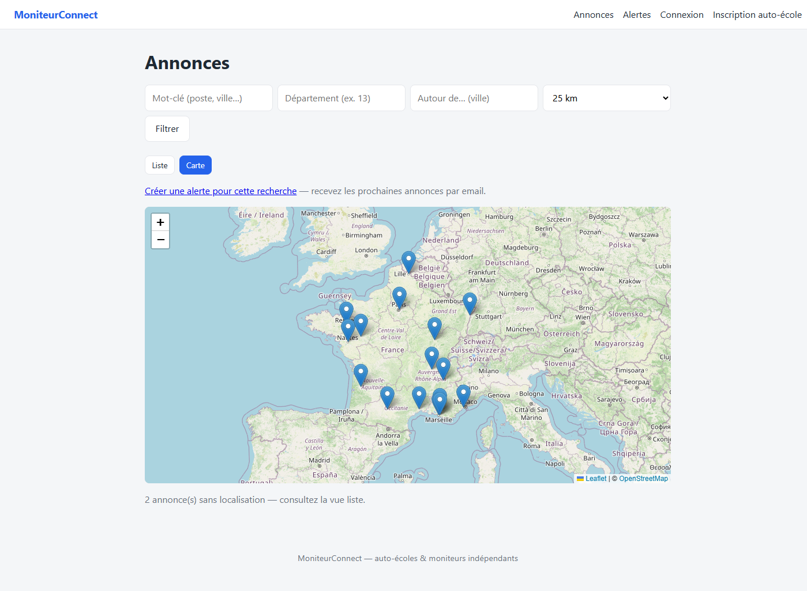
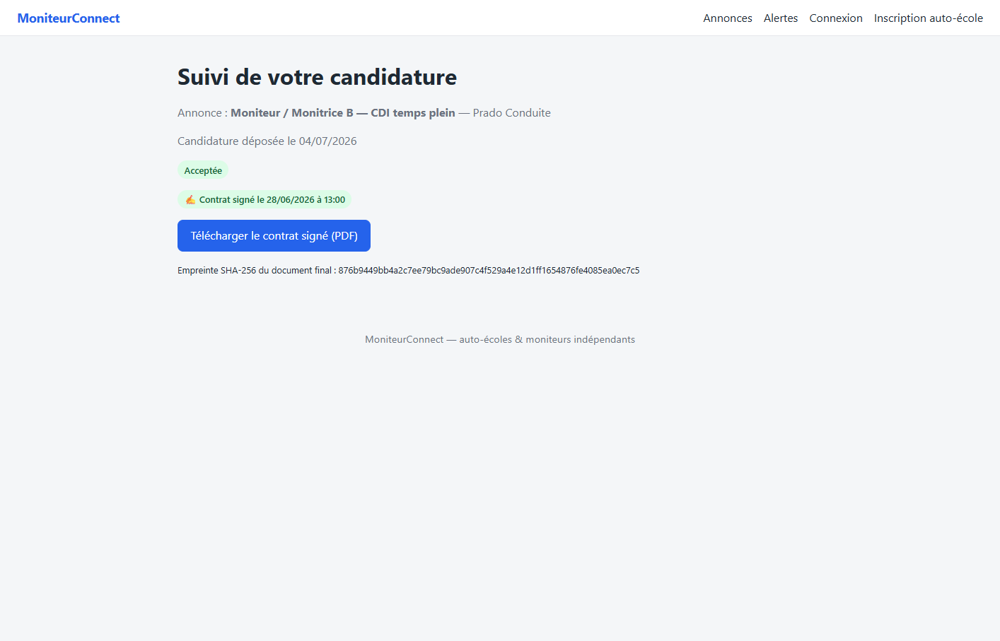
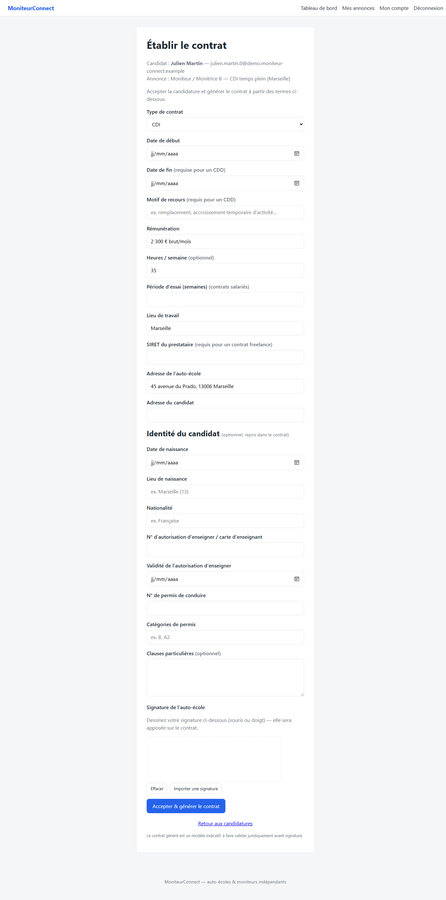
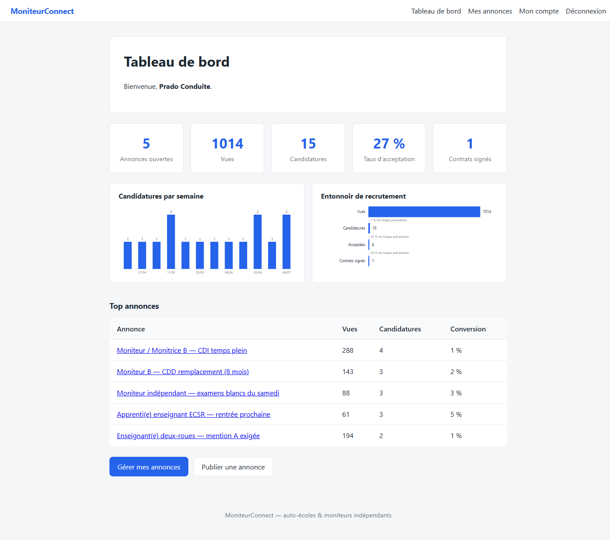
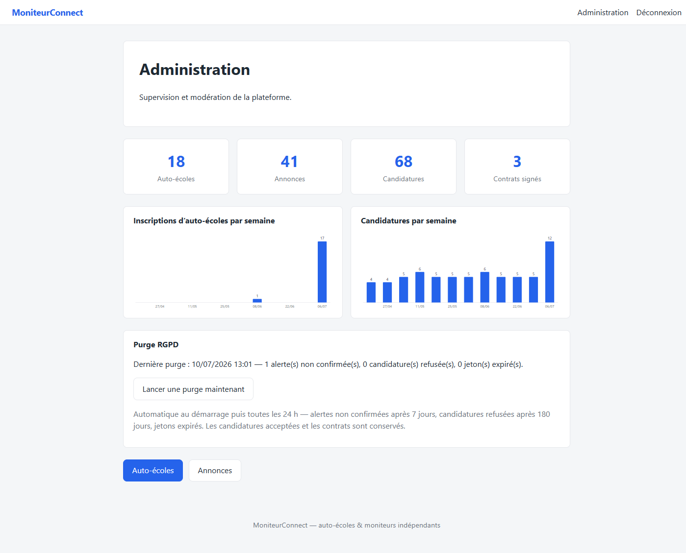

La plateforme qui relie les auto-écoles et les moniteurs indépendants —
de l'annonce au contrat signé électroniquement.
Soutenance du titre professionnel
Développeur web et web mobile (RNCP37674)
L'auto-école
Publie, reçoit des dossiers complets, contractualise. Seul compte en libre-service.
Le moniteur indépendant
Cherche, postule avec ses pièces, suit son dossier et contresigne — sans créer de compte.
L'administrateur
Modère, suspend, purge — espace séparé, compte créé par script.

15
fichiers de tests
448
assertions, TDD
systématique
Bloc front-end
Bloc back-end
Matrice détaillée avec preuves :
docs/jury/competences-dwwm.md


navigateur → routes → middlewares
(session · CSRF · auth) → contrôleurs → services
(Prisma, PDF, emails, géo) → vues Twig
schoolId (isolation entre écoles) ;.env.example versionné) ;SESSION_SECRET ;secure,
trust proxy, SMTP authentifié ;
GEOCODING_DISABLED…).
School.siret unique — la collision en course devient un
message utilisateur (erreur Prisma P2002 gérée) ;Contract.applicationId unique — le 1-1 est garanti par la
base : impossible de générer deux contrats pour une candidature ;onDelete — pas d'orphelins, et le code supprime
les fichiers privés avant la ligne ;npx prisma migrate deploy.
DATABASE_URL, aucun
changement de code ;*Lower maintenues à l'écriture, agrégations hebdomadaires
en JavaScript (pas de SQL dépendant du dialecte) ;
Déroulé minuté : demo-11-minutes.md — en cas de
pépin, les trois diapositives suivantes montrent les mêmes écrans.





signature école (pad/import) → validation de l'image → PDF proposé + SHA-256 + horodatage → invitation email → contre-signature par jeton → PDF final (2 signatures, nouvelle empreinte) → invalidation si ré-édition
test/lot-g.cjs).signatureImage.js vérifie
le préfixe, décode le base64, contrôle les magic bytes PNG
réels et plafonne à 200 Ko ;storage/signatures/ —
privé, nom régénéré.contractPdf.js génère le PDF (écriture asynchrone) avec une
page de signatures : images, horodatages, empreintes ;448
assertions, 15 suites, avant chaque commit
0
erreur et avertissement W3C (validateur Nu, 15 pages)
0
violation axe-core (accessibilité, 15 pages)
0/60
débordement à 320/375/768/1440 px (viewport exact)
Contrôles re-jouables en deux
commandes — méthode et preuves datées : docs/jury/conformite.md.
MoniteurConnect — de l'annonce au contrat signé.
Place aux questions.